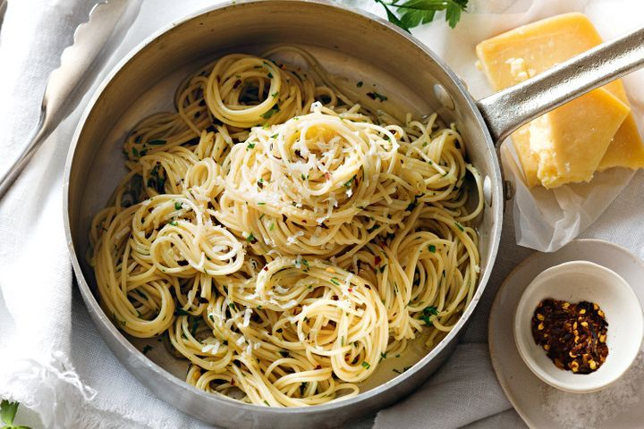

Spaghetti Aglio e Olio

Description
Pure Italian comfort food and proof that Italian dishes are greater than the sum of their parts. The key is slowly toasting the garlic slices to a perfect golden brown in the olive oil. Not too light or you don't get the full flavor and not too dark to avoid bitterness. This is the classic as done by Chef John Mitzewich.
Ingredients
- 1 pound uncooked spaghetti
- ½ cup olive oil
- 6 cloves garlic, thinly sliced
- ¼ teaspoon red pepper flakes, or to taste
- salt and freshly ground black pepper to taste
- ¼ cup chopped fresh Italian parsley
- 1 cup finely grated Parmigiano-Reggiano cheese
Instructions
- Bring a large pot of lightly salted water to a boil. Cook spaghetti in the boiling water, stirring occasionally until cooked through but firm to the bite, about 10 to 12 minutes. Drain and transfer to a pasta bowl.
- While the pasta is cooking, combine olive oil and garlic in a cold skillet. Cook over medium heat to slowly toast garlic, about 10 minutes. Reduce heat to medium-low when olive oil begins to bubble. Cook and stir until garlic is golden brown, about another 5 minutes. Remove from heat.
- Stir red pepper flakes, salt, and black pepper into pasta. Pour in hot olive oil and garlic, and sprinkle on Italian parsley and half of the Parmigiano-Reggiano cheese; toss until combined. Note: It's not traditional, but for extra richness, add 1 tablespoon butter when you toss pasta with cheese.
- Serve pasta topped with the remaining Parmigiano-Reggiano cheese.